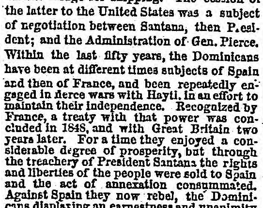
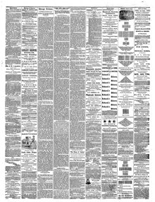

For a time they enjoyed a considerable degree of prosperityPor un tiempo disfrutaron de un considerable grado de prosperidad
Chicago Daily Tribune. Chicago, Ill., October 10, 1863. Page 3. View the originalVer el original


See the full pageVer la página completaAccording to the Chicago Daily Tribune of October 10, 1863, the Dominican people are fiercely rebelling against Spanish rule following President Santana's annexation of the country to Spain. The newspaper reports that Spanish forces have suffered significant defeats—including a routed division of 3,000 men with over 1,000 casualties and the capitulation and retreat from Santiago—amid a conflict marked by mutual atrocities and the burning of towns such as San Carlos. Additionally, while the Dominicans reportedly receive sympathy and support from neighboring islands and the Unitedest States, the article questions their capacity for self-government due to past deficiencies in vigor and cohesion.Según el Chicago Daily Tribune del 10 de octubre de 1863, el pueblo dominicano se subleva con ferocidad contra el dominio español tras la anexión del país a España efectuada por el presidente Santana. El periódico consigna que las tropas españolas han sufrido considerables reveses —entre ellos una división dispersada de 3.000 hombres con más de 1.000 bajas, así como la capitulación y evacuación de Santiago— en el curso de una contienda signada por atrocidades recíprocas y el incendio de poblaciones como San Carlos. Además, si bien se señala que los dominicanos reciben la simpatía y el respaldo de islas vecinas y de los Estados Unidos, el artículo pone en duda su capacidad de autogobierno debido a su pasada falta de vigor y cohesión.
FULL TEXT:TEXTO COMPLETO:
the latter to the United States was a subject of negotiation between Santana, then President; and the Administration of Gen. Pierce. Within the last fifty years, the Dominicans have been at different times subjects of Spain and then of France, and been repeatedly engaged in fierce wars with Hayti, in an effort to maintain their independence. Recognized by France, a treaty with that power was concluded in 1848, and with Great Britain two years later. For a time they enjoyed a considerable degree of prosperity, but through the treachery of President Santana the rights and liberties of the people were sold to Spain and the act of annexation consummated. Against Spain they now rebel, the Dominicans displaying an earnestness and unanimityesta última a los Estados Unidos fue un tema de negociación entre Santana, entonces Presidente; y la Administración del Gen. Pierce. Dentro de los últimos cincuenta años, los dominicanos han sido en diferentes tiempos súbditos de España y luego de Francia, y han estado repetidamente comprometidos en guerras feroces con Haití, en un esfuerzo por mantener su independencia. Reconocidos por Francia, un tratado con esa potencia fue concluido en 1848, y con Gran Bretaña dos años después. Por un tiempo disfrutaron un grado considerable de prosperidad, pero por la traición del Presidente Santana los derechos y libertades del pueblo fueron vendidos a España y el acto de anexión consumado. Contra España ahora se rebelan, los dominicanos desplegando una seriedad y unanimidad